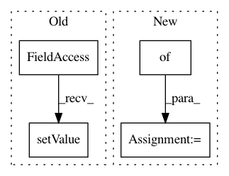

e5b45fc83157572a1ad757455cb25039cdc321bb,ilastik-shell/applets/batchIo/opBatchIo.py,,,#,127
Before Change
opSmooth.sigma.setValue(3.0)
opBatchIo.ExportDirectory.setValue( "" )
opBatchIo.Suffix.setValue( "_results" )
opBatchIo.Format.setValue( ExportFormat.H5 )
opBatchIo.DatasetPath.setValue( info.filePath )
//opBatchIo.OutputPath.setValue( "/home/bergs/Smoothed.h5/volume/data" )
opBatchIo.ImageToExport.connect( opSmooth.Output )
After Change
self.name = name
self.extension = extension
SupportedFormats = { ExportFormat.H5 : ExportFormat("Hdf5", ".h5"),
ExportFormat.Npy : ExportFormat("Numpy", ".npy"),
ExportFormat.Tiff : ExportFormat("Tiff", ".tiff") }
class OpBatchIo(Operator):
The top-level operator for the Batch IO applet.
In pattern: SUPERPATTERN
Frequency: 3
Non-data size: 4
Instances
Project Name: ilastik/ilastik
Commit Name: e5b45fc83157572a1ad757455cb25039cdc321bb
Time: 2012-07-06
Author: bergs@janelia.hhmi.org
File Name: ilastik-shell/applets/batchIo/opBatchIo.py
Class Name:
Method Name:
Project Name: ilastik/ilastik
Commit Name: 6716236abd1bd660065eea4c72a8a88f2ef8f217
Time: 2013-06-05
Author: bergs@janelia.hhmi.org
File Name: ilastik/workflows/carving/carvingApplet.py
Class Name: CarvingApplet
Method Name: __init__
Project Name: ilastik/ilastik
Commit Name: 864483bdbab5c6546ec40f70dfce7eb22ce49454
Time: 2018-11-02
Author: adrian.wolny@iwr.uni-heidelberg.de
File Name: ilastik/applets/tracking/base/trackingBaseDataExportApplet.py
Class Name: TrackingBaseDataExportApplet
Method Name: _configure_operator_with_parsed_args